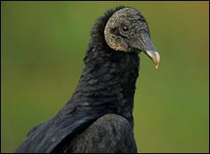
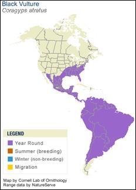

Black Vultures in Athens
They don't normally live this far north, so you're not likely to see them in the wilds of Athens, GA. However they are a native species of southern Georgia. Be sure to visit Okefenokee Swamp to learn more about alligators! You can learn more than the casual observer by clicking the buttons below...
Taxonomy
| Order |
Accipitriformes |
| Family |
Cathartidae |
| Genus |
Coragyps |
| Species |
atratus |
Diet
- In the wild, the Black Vulture feeds mainly on carrion, although it also scavenges fish, vegetable material, and dung. Occasionally, Black Vultures attack small live prey, or in larger groups may attack lambs or newborn pigs. The Black Vulture relies on others in their group to warn them about approaching danger while eating; this allows them to eat particularly quickly.
- At Bear Hollow, the Black Vulture eats a rotation of fish, chicks, rats and prepared carnivore diet though he’ll often wait to let some of his food “season” before he eats his meals.
Range and Habitat

- There are two common vulture species – the Black Vulture and the Turkey Vulture. The Black Vulture occurs in more southern areas.
- In Georgia, Black Vultures can be found statewide.
- The Black Vulture roosts in dense forests with large trees, and searches open spaces for carrion.
- Black Vultures are more common in flat lowlands than in higher elevations. They often soar higher than Turkey Vultures and gather in large numbers at roadkill and other carrion.
Physical Features
- Black body with grey, featherless head.
- Wings also are tipped with white on the underside.
- They have a short hooked beak.
Life Span
- In the wild, turkeys generally life three to four years.
- In captivity, they can live as long as ten to twelve years.
Reproduction
- Instead of building a nest, the Black Vulture lays its eggs (normally two) on the bare ground of the chosen nest site. Parents incubate the young equally.
- The Black Vulture lays its eggs in isolated locations with little human disturbance. They find a dark recess in a cave, abandoned building, thicket, pile of rocks, or in a hollow log or tree. A pair of Black Vultures may assure themselves of the site’s isolation by perching nearby for a period of weeks before egg-laying.
Social Behavior
- The Black Vulture is monogamous and forms strong social bonds to its kin. They are believed to mate for life.
- The Black Vulture soars on thermals to gain altitude and to cover large distances with little energy expenditure. Black Vultures have a less well-developed sense of smell than Turkey Vultures and rely more on sight than smell to find carrion.
- One-on-one, a Black Vulture can be dominated by the slightly larger Turkey Vulture. But, Black Vultures rarely travel alone. Flocks of Black Vultures can quickly take over a carcass and drive the more solitary Turkey Vultures away.
Conservation
- They are a species of little conservation concern.
- This is the most abundant vulture in the Western Hemisphere, and populations seem to be steady or rising in North America. Black Vultures benefit from human garbage at landfills and dumpsters, but they are also sometimes trapped, shot, and poisoned.
- As migratory birds, they are completely protected by federal law.
Interpretive Information
- Vultures have a very unique defense system. When threatened they will actually induce vomiting and throw up on or near an approaching predator. Because their diet is carrion, the stench is overwhelming, but the stench is not the only part of the defense. Their stomach acids are extremely strong, which allows them to remain healthy even after eating a sick animal because the acid is so powerful that it breaks down pathogens before they can infect the vulture. This strong acid, in addition to keeping the vultures healthy, can also keep the vultures safe by literally burning attackers. Vomiting also makes the vulture lighter, making it easier for a glutted vulture to fly away to safety.
- These strong stomach acids make Vultures extremely valuable to our environment. They can safely digest and get rid of almost all harmful bacteria and pathogens that might infect humans or other animals.
- Black vultures do not have feathers on their heads in order to protect themselves from the pathogens that they might come in contact with when eating carrion. A bald head makes clean up a lot easier and helps keeps the birds safe and sanitary.
- Vomiting is also how they feed their young as they do not carry food back to their young with their beaks or feet.
- Vultures legs are grey but often appear white because they squirt urine and excrement onto their own legs which dries white. They do this to help keep themselves cool.
Bear Hollow’s Black Vultures
- Male: Victor
- Injured in the wild and rehabilitated by the UGA Veterinary School who determined that he was non-releasable and sent him to Bear Hollow in 2012.
- Unknown age – hatched in the wild.
Credits and References
- Photo and map taken from http://www.allaboutbirds.org/guide/Black_Vulture/lifehistory
- http://www.hawkmountain.org/raptorpedia/hawks-at-hawk-mountain/hawk-species-at-hawk-mountain/black-vulture/page.aspx?id=642
- http://science.howstuffworks.com/environmental/life/zoology/birds/vulture-vomit.htm
- http://www.wildflorida.com/wildlife/birds/Black_Vulture.php